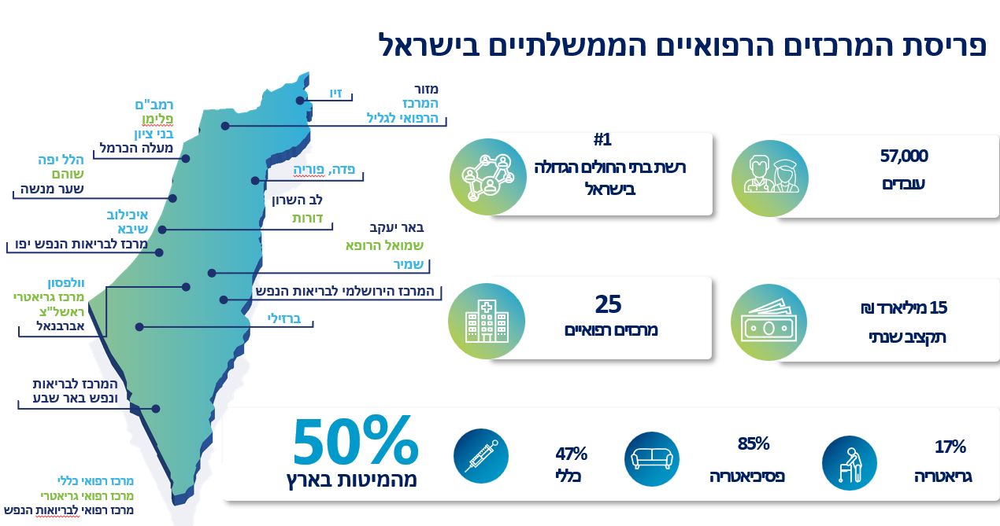

מודול לידות
חטיבת המרכזים הרפואיים
הדוברים המרכזיים
רז ברקוביץ'
מיישם ומנהל פרויקטים
נופר אברהם נתן
מנתחת מערכות מידע
אנה סבג
מיישמת ומנהלת פרויקטים
על מה נדבר היום?
מי אנחנו
פרויקט לידות
תיאור הפתרון
אתגרים
שיפורים ושינויים
קצת מספרים
מי אנחנו?

עקרונות מנחים בתהליך האפיון
תאימות רגולטורית
חווית משתמש
אינטגרציה מערכתית
אוטומציה מלאה
ניהול סיכונים
צוותים שותפים
צוות ניתוח מערכות
צוות יישום נמ"ר
צוות אינטגרציה
צוות יישומים קליניים
צוות דיגיטל
משרד הבריאות \ רשות האוכלוסין
צוותי ניהול סיכונים בחטיבה ובמרכזים הרפואיים
תכנון הפרויקט
לו"ז הפרויקט
ייזום ואפיון
מאי–יולי
פיתוח ובדיקות
ספטמבר–נובמבר
Go Live
דצמבר
- איסוף דרישות
- אפיון התהליך
- תכנון הפתרון
- פיתוח המערכת
- אינטגרציות וממשקים
- בדיקות מערכת
- עלייה לאוויר
- הדרכות משתמשים
- תמיכה וייצוב
לוח העליות לאוויר (דצמבר)
תכנון הפרויקט
(שמיר)
לגליל
(צפון)
פריסה ארצית מלאה תוך פחות מחודש — החל מ-1/1 כל המרכזים עובדים עם הממשק החדש
תהליך הקצאת מספר זהות
שדרוג מקצועי של ממשקי העבודה האוטומטיים בין המערכת הקלינית בחדר הלידה, מרשם האוכלוסין ומערכת נמ"ר.
הקצאת מספר זהות אוטומטי
1. המערכת הקלינית (קמיליון)
עם תיעוד הלידה בפועל בחדר הלידה, פרטי התינוק המזהים נשמרים במערכת הקלינית ומועברים מיידית בממשק לנמ"ר.
2. מרשם האוכלוסין (בדרך לנמ"ר)
במהלך מעבר הנתונים, מתבצעת פנייה אוטומטית מקוונת לשירות הקצאת מספרי זהות של משרד הפנים עבור הילוד החדש.
3. קליטה בנמ"ר עם ת"ז
הנתונים נוחתים במערכת נמ"ר כשהם כבר כוללים ומעודכנים במספר תעודת הזהות הרשמי שהוקצה לילוד ישירות לתוך השדות.
הקצאת תעודת זהות יזומה
מענה במקרה של כשל בממשק
כשל בממשק
העברת פרטי היילוד ממערכת קמיליון לנמ"ר נכשלה, ולכן לא בוצעה הקצאת תעודת זהות באופן אוטומטי.
יצירת פנייה יזומה
ניתן ליצור מתוך מערכת נמ"ר פנייה יזומה לשירות הקצאת תעודת הזהות.
בדיקת זכאות
משרד הבריאות ורשות האוכלוסין מבצעים את כלל הבדיקות והלוגיקות הנדרשות כדי לקבוע האם הילוד זכאי להקצאת תעודת זהות.
קבלת תוצאה
בסיום הבדיקה מוחזרת תשובה למערכת, ובהתאם לתוצאה מוקצית תעודת הזהות או מתקבלת הודעה מתאימה.
תהליך הודעות לידה
מעבר לאוטומציה מלאה וביטול הניירת
מהפכת הודעות הלידה: מעבר לאוטומציה מלאה וביטול הניירת
פתקים וטפסים ידניים
- פתקים פיזיים מחדרי לידה שעוברים ידנית למזכירות
- עיכובים בקליטה - המזכירות לא מודעת ללידה בזמן אמת
- סיכון מוגבר לטעויות הקלדה ותהליכים מסורבלים
שולחן עבודה דיגיטלי ואוטומטי
- זמינות מיידית: כל לידה בקמיליון נכנסת ישר לשולחן העבודה
- אפס הקלדה כפולה: הפרטים מיובאים אוטומטית למערכת
- תהליך חלק: קיצור משמעותי של זמני העבודה והפקת הטפסים
הערה: יכולת זו לא נכללה במסגרת מבחן התמיכה המקורי. עם זאת, הוחלט לפתח אותה כחלק מהפרויקט במטרה לייעל את התהליך העסקי.
הפקת כלל מסמכי הלידה בקליק
לאחר בחירת הילוד בתוך שולחן העבודה, המערכת מרכזת את כל המסמכים הרשמיים הנדרשים להורים וליולדת במקום אחד, במהירות ובפשטות.
הודעת לידת חי
דיווח רשמי למשרד הפנים על הולדת התינוק כולל משקל ופרטי הלידה.
הכרה באבהות
מיועד ליולדות שאינן נשואות ומאפשר רישום קל וישיר של האב במערכת.
קצבת ילדים
הפקת טפסים ישירה למוסד לביטוח לאומי לצורך קבלת המענק והקצבה.
אישור לידה
אישור מנהלי רשמי מטעם בית החולים למעסיק ולצרכים אישיים.
דיגיטציה מקצה לקצה: היכולות החכמות של המערכת
ייבוא נתונים אוטומטי
רוב שדות הטופס מתמלאים מעצמם מתוך המידע האדמיניסטרטיבי הקיים במערכת על האם והילוד.
ממשק משרד הפנים
קליק אחד על כפתור "ממשק משרד הפנים" מושך את נתוני האב המלאים ושותל אותם בשדות המתאימים.
חתימה דיגיטלית בטאבלט
שולחים את הודעת הלידה או ההכרה באבהות לחתימה מהירה בטאבלט ייעודי מול המזכירה.
סריקת קבצים נספחים
במידה ונדרש, ניתן לסרוק ולצרף מסמכים נוספים בקלות ישירות למערכת ולשלוח אותם במרוכז.
תהליך דיווח לידה
שידור פרטי הלידה למרשם האוכלוסין באפס מאמץ
שידור המידע למרשם: אפס מאמץ, מקסימום אמינות
שידור אוטומטי בעת שחרור
אין צורך בפעולה יזומה! ברגע שמתבצע שחרור לילוד במערכת, כלל הטפסים (הודעת לידת חי, הכרה באבהות וקבצים מצורפים) משתחררים ומשודרים ישירות לרשות האוכלוסין.
אפשרות לשליחה יזומה
צריכים לשלוח ידנית? בסביבת העבודה מסמנים את הילוד הרלוונטי ולוחצים על כפתור "דיווח לידה" בלחיצה פשוטה אחת.
משוב מיידי בזמן אמת
לאחר דקות בודדות מרגע השידור, מתקבל משוב רשמי ישירות מרשות האוכלוסין המאשר את קבלת כל הנתונים, הטפסים והנספחים.
אתגרים בפרויקט
עבודה עם ריבוי גורמים
עבודה משותפת עם מספר רב של גורמים כמו דיגיטל, ממשקים, הצוותים בבתי החולים, DevOps ומשרד הבריאות.
דד ליין קשיח
דד ליין קשיח ללא אפשרות לחרוג מלוחות הזמנים.
היערכות לוגיסטית
היערכות מבחינה לוגיסטית של בתי החולים לצורך יישום מלא של התהליך.
פרויקטים מקבילים
פיתוח ועלייה לאוויר במקביל לפרויקט נמ"ר מזו"ר שיבא.
שינויים ושיפורים
פיתוח דוח מרכז הנותן מבט של 360 על דיווחי לידה שבוצעו בכל בית חולים
לידות שדווחו באופן תקין
דיווחים שנכשלו
לידות ללא דיווח
קצת מספרים
עד כה נולדו ודווחו באופן דיגיטלי כ-20 אלף ילודים